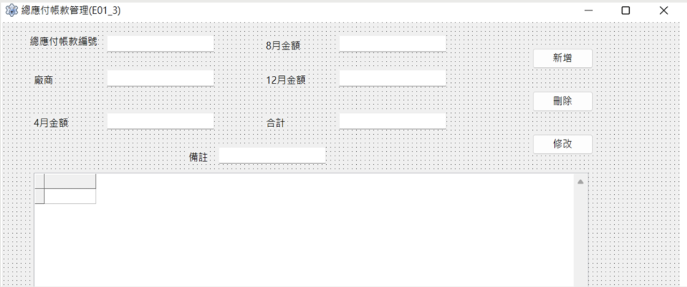
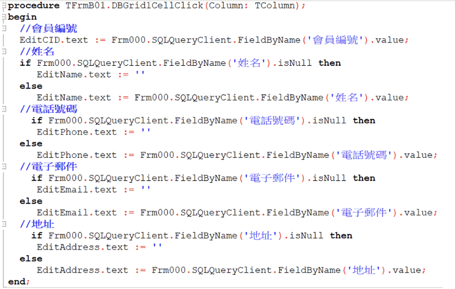

✖


Enterprise Inventory Management System
🎯 Project Overview
在「靜香鞋類進銷存系統」中，我負責端到端系統開發。此專案最大的亮點在於前期嚴謹的系統分析與架構設計，而非單純程式實作。
🧠 System Analysis（核心亮點）
為了解決零售業中會員、銷貨、庫存與財務四大模組的複雜邏輯，我從需求塑模開始，繪製兩階資料流程圖（DFD），完整定義資料流動與系統行為。
🗂 Database Design（ERD + 正規化）
在資料庫設計中，我建立完整 ERD 並進行正規化：
- 避免資料冗餘（會員資料獨立）
- 使用 PK / FK 建立關聯
- 確保訂單與帳務資料一致性
例如：將會員資訊從訂單表拆分，透過「會員編號」建立關聯，大幅降低資料重複與錯誤風險。
⚙️ Implementation（實作）
- Lazarus IDE 快速開發 20+ UI 畫面
- 專注後端 CRUD 與防呆邏輯
- 完成進銷存 + 財務自動化系統
📊 System Artifacts

